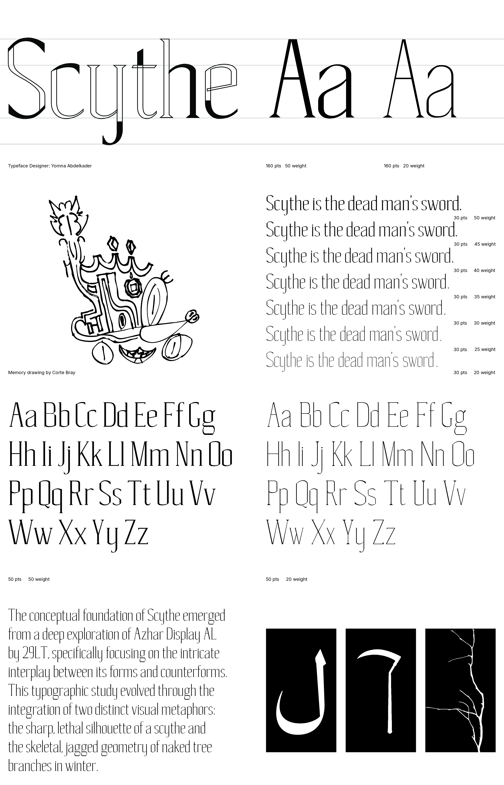
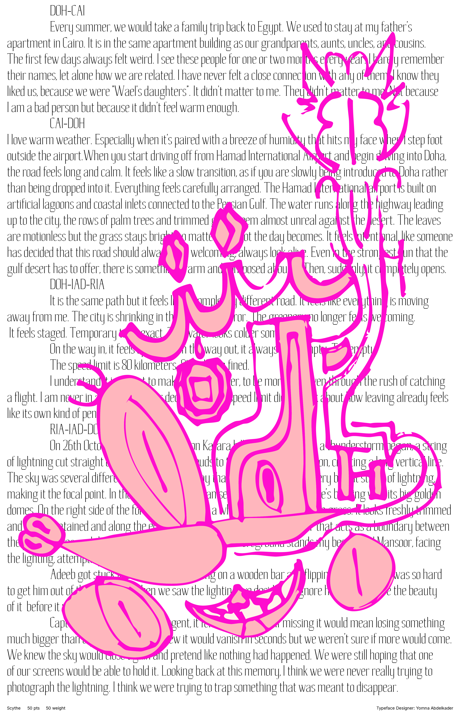

The development of the Scythe typefaceserves as a technicial investigation into reversing the tradiitional power dynamics of multi-script typography. Creating a latin typeface that draws from Arabic calligraphic logic is an act of cultural translation and visual decolonization. To start Scythe, I utilized Al-Azhar Display font by 29LT type foundry as a reference to design the typeface.
Year: 2026
Medium: Typeface Design

